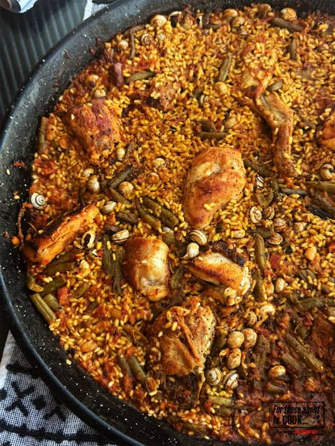

Paella Valenciana
To go back to the Index, Click Here

Paella Valenciana
Spain's most iconic rice dish, traditionally cooked outdoors over an open fire in a wide, shallow pan. The broad surface area allows the broth to evaporate quickly, creating a concentrated, saffron-infused flavor and a highly prized caramelized crust of rice at the bottom called the socarrat.
Ingredients
- 300g Bomba or Arborio rice
- 1 large pinch of saffron threads
- 300g bone-in chicken thighs (chopped)
- 200g rabbit or pork ribs (chopped)
- 1 cup flat green beans (chopped)
- 1/2 cup large white butter beans (lima beans)
- 1 tsp sweet smoked paprika
- 4 cups chicken broth
- 1/2 cup fresh tomato puree
Steps
- Heat olive oil in a wide paella pan over medium-high heat and sear the chicken and rabbit until golden brown on all sides.
- Add the green beans to the pan and sauté briefly.
- Stir in the tomato puree and smoked paprika, cooking for a minute until the mixture darkens.
- Pour the chicken broth into the pan, add the butter beans, and bring the liquid to a rapid boil.
- Crush the saffron threads and stir them into the boiling broth.
- Sprinkle the rice evenly in a thin layer across the entire surface of the pan.
- Lower the heat to a simmer and let it cook undisturbed (do not stir) for about 20 minutes, until the liquid is absorbed and you hear the rice crackling at the bottom.